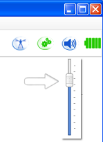
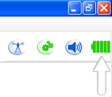
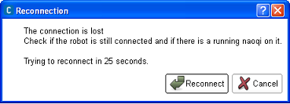

What’s new¶
Opensourcing in progress¶
This is a particular release for us, many things have changed. We are in the process of cleaning our whole framework.
We made a clear separation between public and private APIs, we hope that will help to have cleaner and backward compatible API.
We are in the process of opensourcing the NAOqi framework. This will allow us to build a better product and to integrate it easily with other robotics framework like Urbi and ROS. Opensource is coming slowly, in the 1.12 release you will find the two opensource foundation project: qibuild and libqi-doc. You will get more in the next release, the goal being to have the whole SDK opensource.
Documentation reorganized¶
The documentation has been reorganised and converted to Sphinx.
We added documentation for all public C++ libraries (C++ library APIs) and for our cmake framework.
Choregraphe¶
Brief
- Two new features: Reconnection manager and Animation mode.
- New tools and indicators in the interface, Volume controller and Battery indicator.
- Automatic recognition and display in the 3D view of the robot connected with its body type (H25, H21, T14 or T2) and version (V3.3 or below V3.3).
- Display of the sentence said by the robot connected in the 3D view.
- The default box lib has been improved.
Volume controller¶
This version introduces a powerful tool to control and check NAO volume. No need to go on the robot web page anymore, it can be done directly from Choregraphe with the volume slider. This slider is accesible from the right part of the toolbar among all tools that concern the robot.
{kind=link}
The volume slider is frequently refreshed to take in account every volume changes made outside of Choregraphe.
Battery indicator¶
The battery indicator displays the robot battery level directly in Choregraphe. Each of the five states of the battery corresponds to a different display of the indicator. The indicator is visible from the right part of the toolbar among all tools that concern the robot.
{kind=link}
Reconnection manager¶
The reconnection manager is a new feature that tries to re-establish a connection that has been lost. The process of reconnection goes with the display of a pop-up to warn the user that the connection was lost and that Choregraphe will try to reconnect to the robot at the end of the countdown. The initial value of the countdown is set to 30 seconds.
{kind=link}
It is possible to reconnect without waiting the countdown by clicking on Reconnect or to cancel the reconnection process by clicking on Cancel.
Animation mode¶
The animation mode is an easier way to animate NAO. This mode proposes the possibility to activate and deactivate the stiffness of each part of NAO including the head.
Activation or deactivation can be made by calling each part of the robot as voice commands such as: left arm, right leg, head or by touching tactile sensors and pushing bumpers.
The tactile sensor on the middle of the head controls head stiffness. Left and right bumpers control respectively left and right legs stiffness. If the robot has hand’s tactile sensors, stiffness of arms can be controlled by them, if not, it is controlled by the two remaining head’s tactile sensors. Leds provide visual indications about which member of NAO has stiffness or not.
In the recording mode, the recording of joints positions can be made by saying Store positions or by pressing the chest button.
For further details, see sections:
- Getting started with the Animation Mode
- choregraphe-how-to-store-position-animation-mode
- Creating a movement using Animation mode
NAOqi Core¶
NAOqi core has been cleanup up. Public APIs have been documented and reduced to their smallest subset. This will help us to have a stable and maintainable SDK. A new library ‘libqi’ has been written from scratch to provide cross-platform support. It includes log, data and configuration path management and posix abstraction for shared library, time and path.
Brief
- big cleanup and separation between private and public libraries
- ALMemory insertData is 20 times faster
- Python bound method can now return a value
- New log system. Full details information qi::log Developer Guide
Motion¶
Faster walk¶
This version contains a faster walk for NAO. Maximum walk speed has increased from 9 cm/s up to 14 cm/s, thanks to longer steps (going from 4 cm to 6 cm).
This walk is made possible by an adapted torso elevation, which makes the walk stable even if the movements are quicker.
This new walk is bit more battery-consuming, and increase NAO’s motors temperature quicker, but the walk speed is x 1.5 when NAO walks straight forward (x 1.5 for lateral movements, and unchanged for backward walk)
Custom walk¶
It is now possible to customize any walk parameters: footsteps height, length, rotation angle, torso orientation etc. These walk parameters can be set independently for each leg.
With these parameters, you can design totally custom walks, while still using trajectory interpolation features. These parameters can be updated on the fly, giving you even more possibilities.
New walk functionalities¶
Two new useful features are now available:
to start walking,
ALMotionProxy::walkInitA new method in ALMotion that places the robot in a good position to start walking
to stop walking in a secure fashion,
ALMotionProxy::stopWalkA new method that stops the robot quickly, but still in a secure position, that is with both feet on the ground (and not with one foot hanging in the air like what could occur with the previous method
ALMotionProxy::killWalk)
Changes in destination control¶
The walk interpolation method has been changed. There used to be a Dubins curve interpolation for long walk distances, which has been removed to make NAO’s moves more predictable.
See Locomotion control for more details.
Anti self-collision¶
This version introduces a new motion security feature: anti self-collision on NAO’s arms. The idea is to prevent NAO’s arms from bumping into the rest of its body, to prevent possible damage.
The first part is collision detection. To do so, the algorithm uses the current position of the arms, and a model of NAO’s body (arms, head, torso etc) to compute the distance between each element. If at this position, a collision is possible, the collision avoidance step intervenes.
The collision avoidance step prevents the collision, and finds an alternative trajectory, that is as near to the desired command as possible. To do so, the trajectory is computed as an optimization under constraint of non-collision.
For the moment, this feature concerns NAO’s arms joint commands (joint command API and Choregraphe). It can be enabled or disabled (it can sometimes prevent particular movements which are too close from collision).
Refer to Self-collision avoidance for more details.
Smart stiffness¶
In the version, you will see the first step of dynamics computation in motion. We compute every cycle the dynamic model of NAO and deduced for static position (no joint in movement) the good stiffness to apply for each joint. As the stiffness is a limitation of torque, we first introduced in NAO a torque control startegy.
The result is a robot more compliant in static position and a lower increase of NAO’s motors temperature.
Refer to Smart Stiffness for more details.
Audio¶
New Speech Recognition Engine¶
A significantly better speech recognition engine is now available for V4 robot owners. It features an improved recognition rate, a better reactivity and can spot words/groups of words into a whole speech stream.
Note
The new ASR engine is only available for NAO V4 owners.
Audio Processing¶
Processing audio signals is now significantly easier.
- Defining remote and local callbacks is no longer required. The audio signal coming from the microphones is now passed through a unique callback called “process”.
- The audio signal that is received through the callback does not necessarily contain the four interleaved channels at 48000Hz anymore. One can choose to receive only the front channel at 16000Hz for example.
Audio Recording capabilities¶
A new module called “ALAudioRecorder” has been introduced to handle specifically the recording of the signal coming from the microphones to wav and ogg files.
Audio Playing capabilities¶
The reactivity (launch time, time to loop, etc...) of the wav files playing has been significantly improved allowing for example an easier synchronization with movements during choregraphies.
The ALAudioPlayer module is now also capable of playing a web stream and features new methods to monitor what files are currently loaded.
Brief
- A call to say or playFile in python doesn’t deadlock anymore (bug #3952).
Vision¶
- arv2avi, img2arv and getImage are provided as new examples.
- visionTemplate and its usage in peopleDetection have been removed from examples.
OpenNao¶
From the 1.10 to the 1.12 OpenNAO release, a lot of things have changed in the GNU/Linux distribution.
OpenNAO is no longer based on OpenEmbedded, it is now based on Gentoo.
This major change is motivated by:
- the support of the coming Atom based robot;
- the will to provide a system up-to-date;
- the will to make easier to work for anyone who want to package program and libraries for its robot.
Base commands and programs¶
OpenNAO is more standard, programs on the robot are more standard, you will have standard ps, grep, ls, bash, etc.. We hope it will be easier to work with the robot from a system point of view.
Brief
- use coreutils instead of busybox
- qemacs is now available (use the e alias), see Text editor for more information.
- bash is the default shell (with a custom prompt), see Shell for more information.
Wireless improvement¶
We have done many efforts to improve the Wi-Fi stability. We changed the driver for Ralink network adapter, and fixed many bugs in the whole stack including in connman.
Brief
- Upgrade to Linux kernel 3.0 Wi-Fi stack (using wireless-compat).
- Use of rt2x00 driver instead of Ralink outside kernel tree driver.
- Fix wrong failure state reported by Connman.
- Fix WEP-40 incompatibility.
- Fix Wi-Fi roaming instability.
- Fix the infinite loop of connect / disconnect.
- Adapt the bitrate according to the Wi-Fi environment (switch to minstrel_ht rate algorithm).
- Fix passphrase detection for WEP networks.
- Add support for 802.11n for NAO equiped with Ralink network adapter.
- Add detection for wireless region, enable the use of specific country channel. e.g 1-11 for US, 1-14 for Japan.
qiBuild¶
The NAOqi C++ SDK had always come with various CMake scripts to help you build software for NAO.
Previous releases were using a lot of undocumented CMake functions, known as the ‘t001chain Framework’.
For this release, we decided to rename and document these functions, and this is how the qiBuild CMake framework was born.
The qiBuild CMake framework helps you write C++ code in a cross-platform way, it makes it easy to handle dependencies between libraries, to cross-compile, and to support compiler from gcc to Visual Studio.
It also comes with a set of command line tools, (qibuild configure, qibuild make ...) which helps you manage several C++ projects with their dependencies.
This is still a work in progress, but in the future this will be the easiest way to build applications using the NAOqi framework, on the robot, as well as on the desktop.
The whole project will of course be put in open-source license for everyone to contribute.
See also